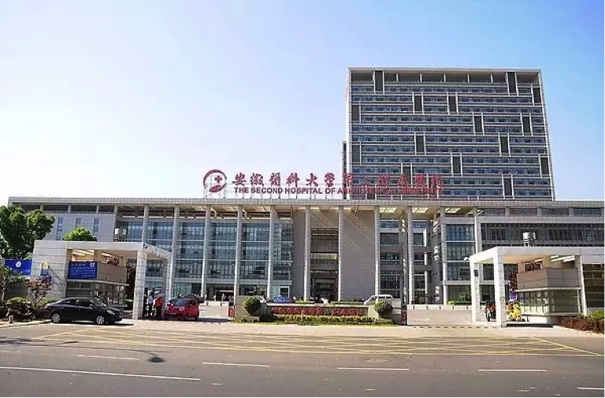
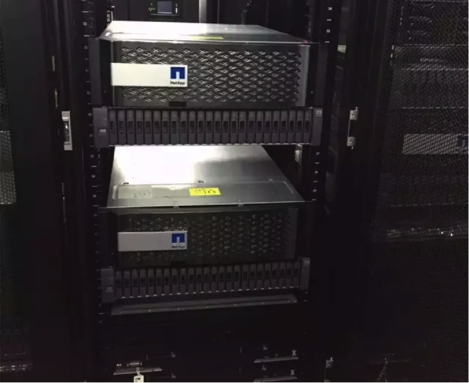

升级数据中心 提升工作效率

安徽医科大学第一附属医院（简称安医附院）是安徽省规模最大的综合性教学医院，是卫生部首批的三级甲等医院。通过采用联想Flex系统搭配统一存储及虚拟化解决方案，安医附院成功升级自身数据中心系统，打造了易管理、可靠性高的新数据中心，在简化管理、提升运维水平、降低成本的基础上，成功迈出了走向智慧医疗的一大步。
挑战：安医附院需进行IT资源整合，适应业务发展需求
作为安徽省医疗服务的排头兵，安医附院共有开放床位2825张，年门诊量超300万人次，年住院病人超12万人次，年手术4.45万台次，同时随着科室设置的增多，每年的数据还处在增长中，信息流的增大使得医院原先数据中心系统的更新及拓展势在必行。

由于目前医院很多的系统都是科室根据自身业务需要独立配置硬件和软件，使得各种信息系统复杂错乱，数据中心的整合成为最大的难点；此外如何借助信息化手段实现流程再造，提升医疗工作效率都是不容忽视的问题。对此，联想以顶层设计出发结合安医附院的业务痛点，引入全冗余的Flex系统搭配统一存储及虚拟化解决方案，构建了一套标准化、便于统一管理、可靠性高的新数据中心。
应对：以“虚”御实，联想打造高可用的数据中心
据了解，联想提供的整体化解决方案包括了软、硬件的一体化管理平台，并通过提供统一的管理平台FSM，将所有的机箱、服务器、交换机等设备及虚拟化平台进行统一管理。借助联想的解决方案，安医附院的数据中心从原有的传统物理机架构转变为虚拟资源池化系统，大幅提升了IT设备的效率，有效节约机房空间和能耗。

实现了全冗余的数据中心，能够支持资源的灵活分配和动态组合，消除了系统单点故障的隐患，更便于实现多种信息系统的统一管理，有助于医疗资源的整合，能够优化流程，实现临床信息数据的共享，有效避免医疗差错，改善患者就医体验，最终提高患者的满意度。而未来，联想也规划好了系统拓展方案，为数据中心的云化奠定了基础，使得安医附院可以主动规划资源增长以快速响应业务需求，更好的为病患服务。